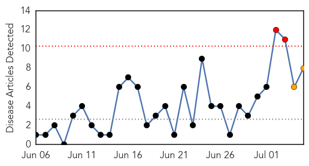
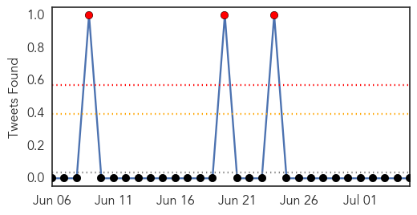
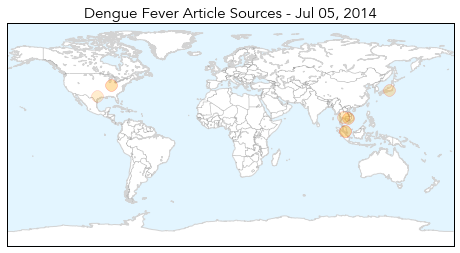
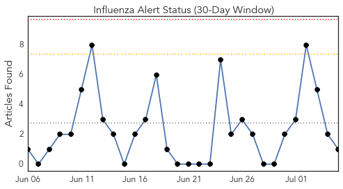
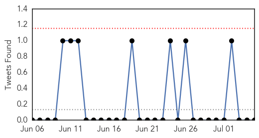
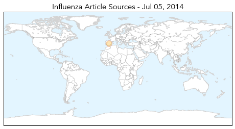

Dengue Fever
30-Day Web Trend
2 alerts, 2 warnings

30-Day Twitter Trend
3 alerts, 0 warnings

Article Locations
Article Confidences

Top Articles:
- 0.974
- Dodging the dengue fever bullet
- 0.942
- SurSur capitol warns public against dengue - Philippines
- 0.918
- 83 Percent Drop in Dengue Fever Cases
- 0.764
- Guan Eng: Don't turn JE cases into racial issue
- 0.738
- Dengue fever plagues Thailand's Samui
- 0.646
- Govt urged to give mosquito net incentive to curb dengue
- 0.636
- Give mosquito net incentive to curb dengue, Government urged - Nation
- 0.572
- Drudge Report critic: His 'Typhoid Mary-style' lies stigmatize immigrants
Top Tweets:
-
No tweets found for Jul 05, 2014
Influenza
30-Day Web Trend
0 alerts, 0 warnings

30-Day Twitter Trend
0 alerts, 0 warnings

Article Locations
Article Confidences

Top Articles:
Top Tweets:
-
No tweets found for Jul 05, 2014